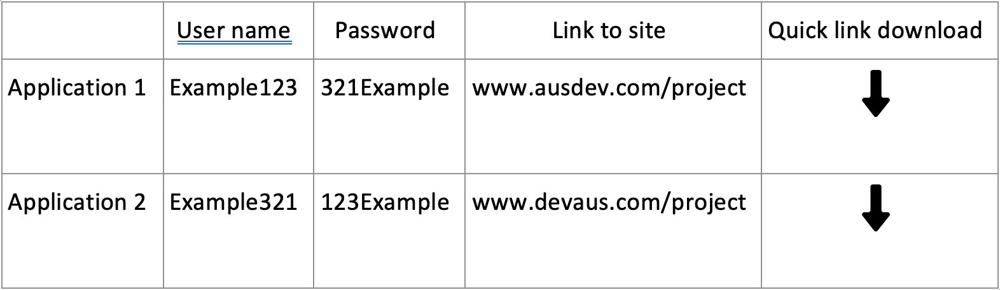
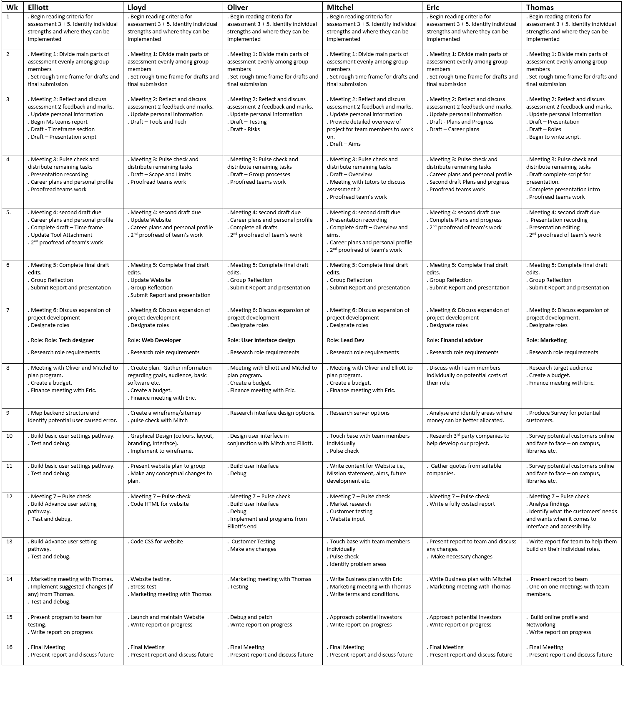

AusDev
Meet The Team

Born and raised on the Sunshine Coast in Queensland, a background in sales and marketing and has a hands-on approach to business. Started Real Time Removals in 2013 that specialised in interstate transport out of the NT and Western Australia, it was a successful business model that relocated families’ interstate. An avid gamer that has a basic knowledge and understanding of IT, he will add value to AusDev by understanding the value of an efficient system to a complex business. The capabilities of streamlining process’s and seeing the benefits in real time is something that is beneficial both financially and personally.

Born and raised on the Sunshine Coast Queensland, Elliott is 30 years of age. Elliott has grown up spending most of his time in the outdoors, doing things like surfing, hiking, spearfishing and camping. He spent the last 8 years of his life living in Melbourne working in the hospitality and beer industry, the last two of which he was a beer plumber! Making sure the thirsty people of Melbourne could get a pint full of the good stuff! AusDev is his next project and with a great love of IT he will bring value to the team.

Mitchell is 30 years old, he is a Australian born in Adelaide. As far as his culture goes, his great grandmother is aboriginal, but other then that he is Australian. Mitchell quite likes learning about the aboriginal culture, especially about "the dreaming". He has a certificate I&II in it from Charles Darwin University. Other that that he was enrolled in a bachelor in IT course online. However the service was so bad that he decided to quit and wait till online learning had improved. Mitchell knows quite a bit of the Japanese language as he has always been fascinated by their culture, this will help AusDev potentially expand internationally. Mitchell enjoy making things. Whether it is with his hands, or digital in a game. He likes to create and solve problems.

Born and Raised in the Bega Valley, on the far south coast of NSW. Family background is Brittish on one side, and Australian on the other back to the late 1800s. Limited Knowledge of IT beyond that it is very useful and has a significant impact in today's world. Interests in IT are in its use both personally and professionally, allowing for gaming personally and use professionally to complete tasks, this knowledge will be valuable in helping AusDev grow. Studies are to help me complete a Bachelor of Business, majoring in Financial Planning.

Born in Darwin, moving to Melbourne, Adelaide and then Canberra. And traveling to a couple of south east Asian countries, Oliver has travelled and seen several different places. At times of rest, Oliver would enjoy both playing games and reading several books. During year 12, Oliver took a IT class where he learnt basic python coding which will be very important in developing key functions within AusDev. This is what started an interest in coding and IT.

Born and raised in Melbourne to British parents, Lloyd’s interest in IT started when he was 10 years old playing and modding games on the family computer, since then has built almost a computer every year. His experience with hardware will be very important in developing AusDev. Lloyds other hobbies include brewing his own beer and going to and playing sports weekly. Lloyd did a year coding back in school and spent 2 years business analytics at Deakin University and has used excel in the last 3 years at his work so has a good knowledge of using excel.
Group Processes
Assignment 2 was a new experience for much of the group, communicating through channels like MS teams and Github took some getting used to, but everyone was quite competent by the time we completed the project. Aside from the first few weeks, everyone was attending the scheduled meetings and worked well together as a team. By using and becoming familiar with MS teams, as a group we have been able to use the tabs function, schedule meetings and have set agenda notes for each meeting, which has and will enable us to more easily plan and track our progress while we complete Assignment 3.
While working on assignment 2 we did not have enough tabs to easily separate the sections of the assignment each of us were working on. This led to some confusion as it was hard to keep track when somebody had edited or updated certain sections. To fix this issue we have created separate tabs using OneNote on MS teams that have separate meeting notes, separate sections of the assignment and one tab that covers the whole assignment and indicates who is working on what. This is to help manage the workload and by doing this from the start, it gives us a better chance of communicating properly and tracking our progress throughout the assignment.
Career Plans
While there are some quite varied career paths that the groups are going down, everyone still has something in common, that they are all studying to gain additional skills to pursue their desired career. There are multiple jobs that are quite IT heavy and as such completing the current Introduction to IT is a solid foundation for further studies. There are some however that may not be as IT driven, such as Eric Shearers Financial Planner goal, this is an area that relies on IT, but does not require specialised knowledge in the field much beyond the scope of this introductory course. The other more IT specialised fields are quite reliant on having a solid IT foundation and so will require additional study in the field of IT to pursue their career aims.
Eric Shearer
My Career aim is to become a financial planner. In order to become a financial planner the first requirement is to complete my studies. Once I have completed my degree I am required to participate in a professional year of study under a qualified financial planner before I am allowed to directly advise clients. And then finally I am able to start taking on clients and becoming a financial planner.
Lloyd Parker
After completing this course at RMIT, assuming I don’t find anything else in the course that particularly piques my interest which is more than likely as this is only the start of the course. I would look for a junior DevOp engineer role, ideally looking for a company that promotes individual growth such as providing courses and training to gain more skills such as Azure Integration and Amazon Web Services, as well providing experience. If finding said company doesn’t come to pass I may have to look for another entry level software engineering role, though one thing I’ve found looking at potential roles is that even after you’ve finished at tertiary education you still need to look to be gain the most cutting edge skills to become a leader in the industry and get a senior role.
Thomas Hannan
My career plan is to become a game software engineer/developer. The most important skills required are being highly competent in using C++ or other low-level areas, such as computer hardware architecture and embedded systems, or strong C# skills along with experience in some form of UI layout such as web development, mobile app development, WPF or React. Throughout this course I aim to learn and anchor myself in my knowledge of software design and programming. Once I have completed this course and improve in the other areas listed, I will be on track to securing my dream job.
Mitchell Lewis
My ultimate career goal is to be employed as a system administrator in a remote capacity. I have chronic insomnia so working any set hours is tough. So my goal is to work from home and be able to do my job at any hours I can, Whether it be day or night. To achieve this I have a few goals. Complete this bachelor of information technology course. Then get some qualifications in CompTIA A+, and a qualification in Windows server. After this I will probably speak to some employers and see what recommendations they have. If there are any additional qualification that would boost my chances of finding a remote administration job I will take them.
Elliott Hannan
My career plan has not changed since completing assignment 2. The goal is to ultimately complete my Bachelor of Information Technology and get my foot in the door in a software development company. I am open to having to complete extra studies if needed to fit the role. I am also quite open minded and would like to leave my options open in case there is a particular component of IT that I find interesting.
Oliver Ingarfield
Ultimately my aim is to become a freelancer or self-employed so I plan to complete my course at RMIT then completing additional courses to become my best self. If I have to gain some experience at a company I would like to work at a small company as I prefer to work in smaller sized groups than larger ones.
There are varying levels of IT related study that the different members require, however everyone is in a similar position, everyone is studying to develop their skills to allow for them to get a job in their preferred industry. While the job that they get initially is unlikely to be their dream job, it should be a steppingstone for them to get the skills and experience to move further on their career path.
Project Description
Overview
Our project idea is to create an application that can allow for people to install their preferred applications onto a computer easily in the case of them getting a new computer or having to do a system reinstall on their existing computer. This is beneficial as it would allow for someone who is not particularly computer savvy to be able to get a new computer up and running without any worries or having a platform to be able to reload applications where there is an issue with the user's computer that requires a system refresh. This allows for all of the desired applications to be reloaded more easily, helping to remove existing issues with the computer’s software without the need for professional assistance. While there are existing systems in place that enable for these actions to be completed, they are complex beyond what the average computer user would be able to execute without assistance. Overall, our idea is to create a platform that is simple and effective to load or reload a person's applications onto their computer with a minimal amount of effort.
Our project is an application that can allow for a computer to be easily loaded with the user’s preferred applications. When someone is setting up a new computer or if they have had to do a system reboot due to having issues with their existing computer this application allows for them to be able to easily set up their computer, installing all of their preferred applications easily and with minimal effort, and in the case of them having to reboot their computer their applications would be reinstalled fresh, without the malware that had infected their computer.
When setting up a new computer, they would be able to use our application to download all of their preferred applications onto their computer. They could ensure that the MS suite of programs are downloaded directly onto their computer, or to download their preferred internet browser to any other things that they would use. For many of the students in this course many of them are gamers, as such they would be able to automatically download any applications that they require for their gaming directly when they are starting up their new computer quickly and conveniently. In the case of small business clients, they would be able to set up their computers with all of the applications that their business requires to run, such as applications that assist in ordering parts, tracking invoices, or any other required applications easily and without issue.
There are also the features to reload applications back onto a computer in the case where it was required to perform a factory reset on the computer due to it having malicious malware on it that required removal for the computer to continue functioning. This would allow our clients to be able to reload their applications back onto their computer much more easily than otherwise. This is something that would be able to be used by individuals and by small businesses where they would have otherwise had to manually re-download all of their applications one at a time, our project would be able to do this easily for our clients with a minimum of effort.
The main target for our project would be for individuals, and for small businesses. The small business would be ones that do not use computers for their main business, for example a mechanics workshop, or almost any small office that does not have an IT specialist within their business. Our project would be useful for whenever the business is upgrading their computer system or getting an additional computer for their business and want it to have the same operational capabilities as the existing computers. For individuals, our project is useful for anyone who is getting a new computer. It allows for them to be able to easily set up their new computer, or to reset their computer after they restore it to remove malware. It could also be used for a person who is setting up a home office to be able to easily set up their computer with their required programs for their job easily, instead of having to check and make sure that they have downloaded all of their required applications for working.
Motivation
For anyone that has ever had to reinstall Windows or bought a new computer would know, it's a real pain. Having to try and remember all the programs you had installed, and then going and downloading them all, surely there is a better way. Internet browsers can remember all your preferences and visited websites, regardless of whether you have a new or old installation. Our project uses the same kind of logic. We wanted a program that would remember your settings and re-apply them when you reinstall windows or move to a new computer. We also wanted to make reinstalling all your programs as hassle free as possible. These things are possible but only with professional tools and knowledge. As we wanted something that anyone could use regardless of their computer knowledge, we decided to make our own tool.
Landscape
There are a few tools that can do some of the same features as our tool, but most of them are made for professionals. You can modify windows, install images, and inject your own programs and settings but this is too advanced for most users. You could create a DISM image of a fresh install of windows and patch in applications, but that too is outside of common computer knowledge. And any drivers or platform specific programs would be wiped on the new computer. There are programs such as ninite (https://ninite.com/), but it requires the user to remember what they had installed, and to go out of their way and download a ninite installer. These types of applications do help in installing applications, but these tools are not used by the common user. We wanted something that would be as a browser, just login and all your settings are applied automatically. So we decided to make a tool, so that the average user could benefit from what only professionals were capable of.
There were not many decisions to be made during the planning phase, As the aim and scope of the project was fairly solid. The only decision that had to be made early was whether to incorporate the programs into the Windows image before install or install the programs after the Windows install. The decision to install the programs after the windows install was made due to the fact that there were a few variables we could not control. If The way Windows included programs were changed that could break the whole install system. Also, if any of the program installers were to change or have an unusual installer that could also break the install. Installing the programs after the Windows install will prevent any complication that would be outside our control.
How the project will do it:
Our Project has 2 parts, a part to read what software the user has installed, and a part to 'write' out that software when reinstalling windows to retrieve their programs.
Read:
Our program reads the users windows registry to find out what software has installed. Once that is done, the program names and versions are stored in the user's profile.
Then the registry is read again, this time to look at any system settings the user has. They are also stored in the user's profile.
Write:
The writing is a bit more complex. If the user needs to reinstall windows they have the option with our program to retrieve their profile.
When a user retrieves their profile, they are given simple clear instructions on how to download a new copy of windows. They are also provided with a few files. One is a windows answer file, this is used to apply their windows settings, such as regional and language settings. The second is a batch file, this is used to run any command that is not able to be run during install, it is also used to run the profiling software. The third is wget, which will be used later in the process. Finally, the last is the profiling software itself. Once this is all done our project will ask if the user wishes to reinstall the user’s programs. If the user chooses to reinstall their software, our project will then read the programs stored in the users’ profile, will compare that to a known list of program websites, then will use wget to download them, the software will then set up the programs automatically in the background.
If the user cannot access the software they can go to the website and login to their account, then they can download the needed files and some instructions. The instructions will guide the user though making a windows USB using the windows media creation tool and copying the files they downloaded from our website.
Our tool is written in C# and leverages wget in order to download files. We use an arch Linux server to host our website using an Apache server. We use PostgreSQL to store and lookup usernames and have a SFTP server for transfer of user profiles.
We use services such as Google and Facebook for user authentication. User profiles will be encrypted with SHA256.
Aims
Our aim is to create a tool that will help streamline Windows installations. Our tool will provide a way for the less technically inclined individual to reinstall windows and their programs and settings without having to know any advanced concepts or need professional tools. The project has several components that will help ease the pain of windows installations. These consist of the tool itself, which is the backbone of the project. A server to host the website, file server, and a user database. A website to provide people with a place to download their profiles. And finally, a detection function that will give the user the option to include a program or setting in their profile.
"Make the profiling software"
The main part of the project is the profiling software. This is the part that will retrieve your user settings and programs, and then reinstall and apply them after a windows reinstall. The software itself is rather simple. It just reads the windows registry to find any programs installed, and any windows settings that have been changed from default. It then used this information to apply the setting after a windows reinstall, and automatically download and install the programs you had previously installed. This tool will help save people time and hassle when installing windows. It will help be of help for the less technically inclined people, as the tool will automate much of the process that otherwise would be tough for them. This is the most crucial component and as such is top priority.
"Make a server"
The server is used to provide a place for users to download any user profiles they have uploaded. This allows users to have access to their profile even when their computer is otherwise unusable. It contains a web server, for hosting the website itself. A database for recording usernames and profiles uploaded. And a file server for storing the profiles themselves. This would greatly increase the usability of the tool. As if a user is unable to access their computer, for example a hard drive failure, the user will still have access to their profile and will be able to reinstall windows with their settings and programs. While the server is a great tool and would improve the tool massively, if we cannot make it in time, we can fall back on the tool itself and use it as an offline tool.
"Make a website"
The website will give the users a place to login and retrieve their profile. We will be using external services for authentication, such as Google or Facebook. This way the security of user accounts is maximised. The website will provide a user friendly place to login to your account and download your user profile. It is also a place where people can look up instructions and can easily contact us for any help that they may need. If we are unable to complete the website, we can still use the tool for users to upload to our server. We would just need to implement a login box and a download profile button. While this would not be ideal, you could still use the tool to retrieve and upload your user profile.
"Detection Function"
The program will also include a function that detects if you have completed a program install and will ask you if you wish to include this in your user profile. The program will also detect if you have changed any settings and will ask if you wish the setting to be included in your user profile. This will give the user the option to include, or not include a program or setting. Giving the user more control over their profile. This would be a nice addition as this would allow the user to customise their profile and keep out programs they would rather not include on a windows reinstall. This would be the final step in developing our profiling software. As such it would not be too bad if we were not able to include it, as the software would still function and would still help make windows install easier.
Plans and progress:
Our tool Works by reading the windows registry to determine what programs are installed. The windows registry can be read by a non-administrator account and therefore can be read by the program without needing admin rights.
We do this by using the prebuild "registry" class C# library, this gives the program read/write access to HKEY_LOCAL_USER, and READONLY to everything else in the registry, as we are only reading at this point read only is fine.
Once the registry is accessed all programs installed can be read from:
HKCU:\Software\Microsoft\Windows\CurrentVersion\Uninstall\,
HKLM:\SOFTWARE\Wow6432node\Microsoft\Windows\CurrentVersion\Uninstall\ and
HKLM:\SOFTWARE\Microsoft\Windows\CurrentVersion\Uninstall\.
This is the same location that Windows stores a list applications for the add/remove programs section. The list of programs is then stored in the user's profile file.
The software will also check for region and language. This is done by checking a few registry keys. Windows does not store language in just one registry key, so we will have to check multiple and compare them.
HKCU\Software\Microsoft\CTF\SortOrder\Language\00000000
HKCU\Software\Microsoft\CTF\SortOrder\Language\00000001
HKCU\Software\Microsoft\CTF\SortOrder\Language\00000002
HKCU\Control Panel\International\User Profile\[langid]\CachedLanguageName
HKCU\Software\Microsoft\Internet Explorer\International\AcceptLanguage
HKCU\Keyboard Layout\Substitutes\[langid]
HKCU\Keyboard Layout\Preload\2
Region is stored in the following keys HKCU\Control Panel\International\Geo!Name and HKCU\Control Panel\International\Geo!Nation. one these are compared and the language(s) are determined, they will be stored in the user's profile.
The program check for the time and date on startup, it is determined using the (DateTime.Now) fiction in C#. It is then stored in the user's profile for use in reinstallation.
Our software also checks for any changes made to windows settings. This is done by checking certain registry entries and comparing them to ones from a fresh install, For example, monitoring "HKEY_CURRENT_USER\Control Panel\" for any changes made. It will then be added to the user profile file.
We also have a detection module planned. While this is not required for the program to function, it would be a nice addition. We plan to have it function similarly to how password managers do. Where it will detect a program being installed, or just got installed, and ask if the user wishes to include it in their profile. We would plan to have it run in the background, monitoring for any processes that might be an installer. The following is an example of how something like this would function.
Most program installer processes will be named after the program they are installing, for example "CrystalDiskInfo". The program can monitor for user run programs and then ask if the user wants them added to the users profile.
If the program cannot be determined by the process name, then the program can monitor for the processes of common install programs, such as install shield. Once an installation is completed and the process is stopped, the program can then read the installed programs from the registry and compare them to the programs stored in the users profile file, It can then add any new programs found to the users profile.
Our detection module could also be used to monitor for any changes made to the windows settings. The process is similar to that used to monitor programs being installed.
The detection module can also monitor for the Windows settings window, or any other processes that are used to modify Windows settings. Once they are closed the program can compare the current list of current Windows settings to a list of previously stored settings, if any changes have been made, the program will then ask the user if they wish to add the settings to their user profile.
As a part of the detection module the program checks the time and date on startup to check if windows has been reinstalled using the Windows "refresh" option. If so it will ask the user if they wish to reinstall their programs. As windows refresh does not wipe settings, only the programs will need to be installed. The detection module is not required for the software to work, it just helps automate its functions. If it were unable to be included, the user will still be able to use the software manually. We would just have to include an import button, to apply all settings and programs to the user's profile. And an export button, to provide the user with all the files necessary to facilitate a Windows reinstall.
If the user intends to reinstall windows manually they can open the profiling software and export a few files, the program will also direct the user to the appropriate links to download a new copy of windows. It can then tell the user where to copy the files given, example: root of the usb drive, or in the sources/ folder of the install media. one of the files given to the user is a Windows answer file. This file can be used to reinstall windows with the current users settings such as language, region, and any other setting the Windows installer would ask during install. The program also includes a copy of itself along with the answer file so the user will not need to download it separately. It also includes a copy of wget, this is used to download the users programs. The last file is a batch file, this is used to apply any setting that could not be applied during install. The profiling program also includes a copy of itself so the user will not need to download it separately. The batch file is also used to install the profile software automatically once windows has been installed and the user has logged in for the first time. The batch file will tell the software to download and install the programs in the users profile.
The program will then compare the list of the users installed software to a list of known software stored in the program, it will then download the users programs using wget, and then install the programs using the /quiet flag. That is all the hard stuff. If we are able to complete both the software and the detection module, then we will work on creating a server. This will be used to host a web server, to give users an easy and convenient place to download their user profile. This is handy if they have hardware problems that make it hard to export their profiles. This would require not only a web server, but also a database, this is used for storing user information. And a file server (probably something like sftp to keep it simple to start with) to download the profile from. We would use third party authentication, such as Google or Facebook to authenticate users. This makes it much more secure as we do not have to handle user credentials. One a user logs into our profiling software using one of the aforementioned authentication methods, their user profile will be encrypted using SHA256, and then sent to our server. We will then store the user's profile in our file server. Then we will assign it a number and store that along with their username in our database. When a user or the program requests their profile, we will check their username against our database, and then send them the associated user profile.
As none of us are web developers, the information on how exactly the website will work is uncertain. But this is something that we would develop last and is something that we can easily learn or hire a 3rd party to make.
Future Ideas
All projects need to be developed over time to ensure that they remain relevant. One of the ways that we plan on doing this is by adding additional features into our product. One of the features that we plan to add is to be able to store usernames and passwords for our clients securely, adding in a password generator to assist our clients to be able to have secure passwords for different sites and applications. Many people have trouble keeping track of their different passwords, and by having a secure place to store them that our clients can easily access. This is even more significant in the case where our clients are setting up a new computer, by having all of our clients passwords securely stored for them, they will still have secure access to their passwords, instead of only having them stored on their computer. These additions are similar to the existing product KeePass Password Safe^1, and while this is a good product it is not particularly user friendly, something that I believe that we could greatly improve upon. By having a good format for our product, we can make it easy for our clients to be able to keep track of their usernames and passwords, we would use a simple format, where we would be able to have a list of all of the stored applications, with space for username and passwords to be easily retrieved. This could also be used for websites, with adding in a section to have a link to websites. There would also be the potential to add in a quick link to add each individual application to a download queue for when our clients are setting up a computer.

If we do make a competitive product then we would be able to either be able to request donations from clients to be able to cover costs, or also be able to charge a modest fee for use of our product, such as a subscription fee to manage and update our project, eg $1 or $2/month, with a discount for an annual subscription
This project would allow for our clients to be able to more easily load or reload their preferred applications back onto their computer when setting up a new computer or resetting up an existing computer. This is something that will be able to help many people to be able to easily load up their applications, setting up a new computer or removing existing malware that had breached onto their systems. Our project would allow for people to be able to easily load up all of their desired applications onto a computer whenever they need to setup a computer, this assist people whenever they get a new computer, or if they have to redownload applications onto their existing computer. Like all projects, they can develop and grow over time. By leaving areas that can be further looked into and developed, we ensure that our project can remain relevant and functional even as other systems change over time. Overall our project is to create an application that can be used to assist our clients to setup their computer for many years to come.
^1 - Keepass, Keepass Password Safe, Viewed 08.05.2022,
Roles
It is sometimes useful to define roles for particular participants, such as Lead Developer, or Technical Designer, or User Interface Designer. It is also possible that roles are changed from week to week, depending on what needs to be done next. Have you defined any specific roles for your project? If so, describe and justify these. If not, describe your process and justify why there are no specific roles.
Having designated roles when creating a project is extremely important, everyone in Ausdev is very different based on their own personality tests and learning styles. This is a strength that we have, as specific roles within the project can be covered depending on who is best suited based on their prior knowledge and capability. Ausdev has a constantly changing group dynamic where everyone is helping wherever they can, but we do have specific titles assigned to each member.
Mitchell Lewis - Lead Developer
Coming up with the project idea in the first assignment, Mitchell has been assigned the role of the lead developer. As the lead developer he is responsible for the scope and aim of this project, coming up with the idea, he has the fundamental knowledge of the potential this project has. Focusing on software development his previous knowledge has enabled him to see the problem faced by many people trying to re-install specific preferences when setting up new computers and the extensive amount of time this can take. His aim is to make this easier and faster which can have benefits to small business and the everyday user.
Elliott Hannan - Technical Designer
Having a knack for problem solving and experience with many forms of software and programming, Elliott has been assigned the role of AusDevs Technical Designer. Getting the idea for the project and the fundamentals of how it will work, Elliott’s role will be to transfer these ideas and communicate the product design intent and constructability. His aim is to create a system that is easy to use and update for the software developers.
Eric Shearer – Finance officer
Currently studying to complete a Bachelor of Business, majoring in Financial Planning, Eric has been assigned the role of financial advisor for Ausdev. This role will help Ausdev in figuring out how and where we will receive the money necessary to launch the project idea. Eric will also be able to assess the viability of the project and create short and long-term financial goals.
Oliver Ingarfield – User interface designer
Oliver's role will be working hand in hand with Elliotts, the technical designer is responsible for the system development while Oliver's role will be responsible for what is presented to the end user. This role is extremely important to the project as the ergonomics of the software and how easily it is to use will decide its viability and success. Oliver's role will put him in the users’ shoes and figure out the best way to present and collect information to create a streamlined easy to use program that will save the user time and give them an enjoyable experience.
Thomas Hannan - Marketing Manager
Having previously studied marketing, Thomas has been assigned the role of marketing manager. This role will encompass figuring out the strengths and weaknesses of the project and creating a product that people not only want but need to have. Creating a marketing plan that, from the beginning, will enable Ausdev to bring life to a product from the ground up that has a clear aim and secure its place in a very competitive market.
Lloyd Parker – Web Developer
With previous experience in digital design, Lloyd will be assigned the role of Web developer. Lloyd created the logo in assignment 1 and from then has been actively involved in creating the HTML and CSS to deliver a functioning and engaging web page. This role caters for Lloyd’s strengths and will be beneficial in creating a place that Ausdev can promote itself and potentially secure investments or new customers.
Scope and limits
At AusDev we are an ambitious, however inexperienced team which will lead to obvious limitations when creating a program such as ours from scratch.
To begin with, our main focus is getting familiar with the software that we will be implementing. The first task we would need to focus on is creating a simple piece of software in each element of the product. The first real proof of concept that we would like to show is that we can create a program that can read a user's Window Registry, then we would find a way to save these settings into a file. After which we would need to find a way that this information can be formatted into a way that Windows can read and used in the Microsoft Deployment Toolkit.
We already have several ideas of where we would like this product to go for example potentially adding and transferring internet cookies so all your favourite websites are already in your browser and a password manager so when a user does have to use the program to change or reimage their computer all their passwords will be right there for them. We do understand that all of this comes after we have completed the main function of the product and it is running smoothly and is usable for even the most basic computer user.
Tools and Technologies
To create our program and surrounding assets we will need a platitude of different programs from tools to allow us to code in C# such Windows Visual Studio to software that allows us to create and host servers such as Apache and Arch Linux to programs that simply allow us to create "How to" videos and widgets for our program such as GIMP and DaVinci Resolve. Over the next months we plan to teach ourselves and learn to become proficient in these tools to create our program and all the necessary periphery when releasing a software like our own.
Windows Visual Studio
Primarily, we would be using the open source Windows Visual Studio 2022 v17.2 which is currently the latest version of the product. At AusDev we do not have any experience using the C# language, however being a popular Microsoft development platform there are plenty of resources to help us learn as well as having references to Windows API inbuilt which will allow us to easily access the Windows Registry which is where we plan to get users settings from primarily.
PostgreSQL
A piece of open source software we plan to use is the PostgreSQL v14, which we will be using to look up and transfer data for user profiles such as usernames and settings. At AusDev we don’t have a lot of experience using this program, however being a very popular platform there are copious amounts of guides and tutorials for teaching what members what they need to do.
Arch Linux and Apache
To host our website we will be using Arch Linux v.2022.05.01 as a framework for our server while using Apache V2.4.53 server to host. Some members at AusDev have experience in creating and hosting servers from various passion projects in the past, so we feel that this aspect of the project will be the most comfortable.
Wget
At AusDev we plan to use Wget v2.2.0 as a program to retrieve data from our servers, Wget is an open source program for downloading data via HTTP and HTTPS which in the data type we plan to run our servers with. As a collective we don’t have a lot of experience with using Wget however it is a program with one primary function so we believe that this will be easy to integrate as there are guides and instructions.
WordPress
Software we plan to use to create our website is open source WordPress v5.9.3 WordPress is one of the most widely used softwares for creating websites. We don’t have at AusDev don’t have a lot of experience in using PHP, which is the language used in the software. Additionally WordPress also provides hosting services which we will use to host our website as they also will be able to provide customer support if we run into any troubles.
GIMP
An open source program that we plan to use to create icons and images to make our program easy to use is GIMP v2.10.30, various members of our team have experience in GIMP as well as similar programs such as Adobe PhotoShop.
DaVinci Resolve
Another program we plan to utilises to create the walkthrough videos on how to use our application if required is the open source video editing and create software DaVinci Resolve 17 which isn’t the most up to date version of the product however DaVinci Resolve 18 which is currently available is in beta. Several members at AusDev have experience in filming and editing videos, particularly walkthrough videos.
Testing
Our software will be tested in three parts, the software, the website and the server.
The software will be tested using a clean install of windows, firstly on a virtual machine then on a new hardware computer that hasn’t been touched before. Firstly, we will have to make an application that can write a script that windows can read to change settings. This can be tested in several batches such as testing simple settings such as saving which time zone the user prefers and their language settings. Then we can move onto more nuanced setting options such as the volume of each individual program in the volume mixer. We can maintain different copies of our software to make sure we know which changes affected which part when updating it. As stated earlier we can run this on virtual machines to save time and energy swapping loading updated programs onto different set ups. This will be the same process for the next part which is reading user’s settings in their registry and then converting those settings into our script that can be run in our program. The next and final stage of testing will be testing on new different live machines to see if any bugs come up from different combinations of hardware and software already installed on machines.
We will need to test our website building capabilities which will mean making sure we use what we learn in this course such as setting max widths and other variables to make sure that our website functions and looks nice on all setups. We will test this by sending around AusDev to make sure it works and looks good on our devices, such as computers, tablets, and phones before sending it out to friends and families to see if they spot any issues.
The testing stage on building our server will be rather simple compared to the other stages which will be learning and following guides to make a server that will connect to the internet that all we can access. This will be done by just simply following the instructions and testing it outlive to see if we can access our website and if our program can reach the server.
Overall, the testing will happen throughout the development process, as we are beginners we will be testing out different methods and will have to make a concerted effort to keep track on previous versions of the program to make sure we can backtrack all the changes we make.
Timeframe
The first six weeks of the following table represent what our group has achieved on an individual level. Based on our workloads for those weeks, we were able to make what we think is a fairly accurate prediction on what we could achieve if we had an extra ten weeks to work on our project. The later stages of this plan are assuming we are able to maintain an average of ten hours work per week. The nature of a project like this may lead to unforeseen hiccups in the early stages of development, we must remember that it will be a dynamic process and leave room for change if need be.
In these later weeks we are each assigned a role and we are to work in our field to present a report to the group by week sixteen. We will shift our focus into taking on these more serious roles and instead of weekly meetings involving the entire group, we will trim them down to a more personalised level. These 2 or 3 person meetings will help us achieve our goals in a more professional fashion. It will be up to the lead developer to make regular pulse checks and make changes where needed among the group.
Upon completion of our individual reports, we would be well on our way to having a working prototype, business plans and marketing ideas to help further our endeavours. At this point we would make the decision if we would like to continue our project as a team or pass it on to those who wish to take the project even further.

Risks
There are potentially a few risks when it comes to making this application. In the initial first step in choosing which programming language to use and what application to help aid in the programming. The risk comes from that if we start using one type of coding language at first, only to find out that it cannot perform the function needed of it as efficiently as another program or cannot do the required task at all, it would result in wasted time. If this was scaled up to a proper company, then that waste would be worth more than a couple of people creating a program in their spare time. This extra cost would appear in the form of money. The cost of having to pay workers for the initial time for the first version, then having to pay for a complete restart, would eventually add up, especially if this happened late into the project. Restarting a project could come into conflict with either running out of funds to keep the creation of the software going. It could also come into conflict with required deadlines. If AusDev became an actual company and had to create this application under a contract by a set date and failed to do so, then the cost to the company could be major.
A potential risk that could occur during the development of this application is to do with how the file is saved. Assuming that this application is held privately amongst the members of AusDev and none of the members have any viruses or other malicious programs on the computer which could potentially cause disruptions, if in the process of saving the wanted settings applications to either an external storage device or a cloud based storage system the connection becomes disrupted in some way, either through pulling out a cord or internet cutting out, than this could cause a couple of problems. At its most minor is that you get only a small portion of the files saved. Though more major is potentially causing corruption to the files. If the corruption is only to the saved data, then it could just be a simple delete and re-try. Though if the corruption extended to the program itself, then it could cause a reset of the creation of the project to the last saved backup. Though if this happened during a testing period that involved people outside of AusDev, and it caused damage to the personal files of the tester, then AusDev would potentially risk hurting relations with others in a minor way at best, to paying for potential damages and lost valuable files. This would then lower the reputation of AusDev and its members in the future, potentially making it harder to obtain other jobs in the future or to continue on as AusDev.
Now, what are the potential risks if AusDev became an official company and published this tool as a product. One risk is from people obtaining AusDev’s software and selling it as their own or providing it for free if AusDev wished to sell the application. It would be required to get legal ownership over the I.P beforehand which could take time, which could lead into potential deadline problems. Another potential risk is legal problems with Microsoft. As this is a program that interacts with windows, when saving the settings for the users pc, it would be necessary to make sure it does not save the windows OS as it could potentially lead to becoming a tool used for piracy. While most likely being done by people using the application/ tool, Microsoft could have issues if AusDevs created the application/ tool that helped facilitate the piracy which would cause at best, large pay-outs of money. In a similar vein, if the user wished to transfer across an application such as a game with any modification such as mods or save files in times when transferring saves through the cloud is not provided, then the risk comes in if this would be used for piracy. Because what is stopping someone from attaching this application/ tool to a friend's device so that they could get a free game. At a simple level would be to flesh out the terms and services so that the company could not be held liable. Though there is still the potential risk of losing reputation and trust from other companies and investors.
Group processes and communications
To help keep a consistent method of communication and sharing of files/ documents “MS Teams” is being used. With this it allows each member to easily message the whole group to ask questions and to organise meetings and task delegation. Though a discussion between the group all together and a bit more directly is required to happen multiple times a week. To help deal with this, AusDev has agreed to have meetings at 7:30pm on both Sunday and Wednesday. These meetings allow for simple confirmation of what everyone is up to as well as more proper discussions to get thoughts across. Another use for “MS Teams” is that with its calendar, it's easier to remind group members when the meetings schedule and when certain tasks are wanted to be completed.
In cases where a group member might not communicate for an extended period of time, first would be to attempt to contact them through other means. Then check to see if there is a potential reason why they might not be communicating. In cases where this lack of communication could cause problems with work not being on time, then delegate their job out fairly to the other members, potentially saving the group project from any “damages”.
Skills and jobs
With funding behind our team, we would likely be able to transition into public testing within a six-month time frame. If this were the case, we would have to flesh out our team with newcomers who can provide skills we don’t possess. While marketing, web development and innovation are all something we are able to handle, we do lack in a few key areas. To take our product to the next level we are going to need people in roles that include tech support, public relations, cyber security, and business advisement. As we move into the public domain, positions like these are going to help take any unnecessary weight off our shoulders and leave us to focus on the bigger picture aspects of Ausdev.
Cyber Security Expert
While we are not handling users credentials directly, there are probably some programs users will have installed on their computer that they would rather people not know about. As such we want to make sure our server and services are as secure as possible. This is why we have elected to hire a cyber security expert. We would like to make sure our program is handling encrypting and decrypting the users profile file correctly, and that the profile is secure in both transit and on our server. As far as the server goes, Linux is relatively secure to begin with. We would like to make sure it is as secure as it can be, and that we are following the best security practices. While our website will be using 3rd party authentication, we would like to know it is as secure as possible. We would like to make sure there is no exploit or misconfiguration that would grant an attacker access to user files without authentication. These are just some of the reasons we think hiring a cyber security expert would be in everyone's best interest.
Tech support
Once our product transitions into the public space, it will be only a matter of time until users have difficulties with its use. Although we have specifically designed our product to cater for people who know the bare minimum of computers, we will likely be inundated with customers having issues. To handle these issues, it will be a good idea to have someone on board who has the skills to troubleshoot customer problems either over the phone or via DM’s. Our tech support person will have to be skilled in customer relations and communication and they will need to be quite skilled in the field of IT. A diploma in IT (or similar) should suffice but would be willing to take anyone with a higher-level education in the field if it suits them. Having someone with these abilities and who is dealing with user errors daily could also benefit the team when it comes to performing updates and patches to our program. Tech support is an essential service that all tech companies should have especially when dealing with the public on a large scale.
PR/Socials
By getting someone to spearhead into PR and social relations, we would ensure that we are able to have someone dedicated to developing a positive relationship with clients and potential business partners. By having someone in this role it makes sure that we have an experienced person to maintain relationships between different entities. Having a professional person maintain these relationships is beneficial by itself, however it also ensures that our other team members are able to focus more heavily on their work, improving their productivity, and not having to maintain relationships which is time consuming and would detract from completing their other works.
Senior Business adviser
For this role we would be looking for a Senior Business Manager consultant who can provide insight on bringing a product like ours to market. One of the key flaws that we’ve identified at AusDev is the lack of experience which we will hope to leverage the experience of the person who fills this role. Due to the lack of experience we expect to have missed details and potentially key details of bringing our software to market. As a collective at AusDev we know several candidates that could fill this role so finding someone to fill this role could be an easy task and a clear benefit to the team to assist us to meet our goals now and in the future.
The natural progression of our development team is going to require us to branch out into the workforce for skills that we may be lacking. Our strengths lay in the back off house arena where we can be creative and come up with new concepts and updates for our program. Where we come undone is in the public arena, this is where these 4 roles will become an integral part in our development as a team. It is important that we integrate these public facing roles into our business model as we expand so we do not overwhelm ourselves with work we do not specialise in. With help from the venture capitalists, we will be able to set Ausdev on a trajectory to become a self-sustaining successful tech company.
Group Reflection
The group felt like we all worked well on this assignment. We felt like we all had trouble with working online, but we were able to overcome it and were able to get all our tasks completed. Everyone seemed pleased with how everyone else performed, and how they were able to complete their parts in a timely manner. The group was happy with the group's overall skill level, as we have people with multiple backgrounds, we were able to all come together and add all our experiences in their given field. We feel this helped a lot as this allowed us to all see the same problem from different angles, and we feel this gave us the best solution to a given problem.
We also think that the group has a good spread of knowledge, if someone was not so knowledgeable in a particular area, someone was there to fill in and even add out the group's knowledge. We all think the team lacked when it came to communication, Not everyone attended the meeting and some people were absent to most of them. Outside of meetings the team did not communicate well, it is also sometimes hard to contact someone, as they might not have their computer on or check their messages. We think we believe this is our biggest weakness, and we will strive to improve this in the future. We found it surprising the amount we all learnt from working together on the last assignment. We were able to avoid a lot of the problems and pitfalls we encountered working on the last project, and we were able to work a lot more efficiently because of it.
e group thinks that the thing we learnt about working as a group is just how dynamic a group can be. People may not be there for meetings, people may have differing opinions on a subject, or they may not have experience in a particular field. As such people may need to change tasks, and other people may have to help out and do more than other people.
While they may not be as knowledgeable in this particular subject, they will help out in other tasks that they are more knowledgeable in. In summary, despite the problems the group had with communication, we all think we were able to work well as a group, and this allowed us to adapt and overcome any obstacle we encountered.
Elliott Hannan
For the most part our group did well in identifying our individual strengths when I came to dividing out tasks. While our skill levels were varied, where some of us lacked, the others could balance it out. Not just in our IT skills but life skills like communication, time management, reliability etc. Improvements could be made by members attending meeting on a consistent basis, especially without getting in touch with the team first. I would have liked to see some more participation from certain members of the group when it came to splitting the workload evenly. Improvement could also have been made in meeting certain criteria in the rubric, but with many people involved it is understandable how that can be easily overlooked. I learned that in groups situations everyone is different and not everybody’s minds are structured the same way. It’s easy to let that become an issue that could lead to failure, but at the end of the day we were able to overcome these challenges and produce a quality assignment that we should all be proud of.
Mitchell Lewis
I think our group works well with one another, we all get along and find it easy to work together. We are able to talk about problems and get them sorted out quickly. Everyone does a good job at contributing to the tasks, and all tasks are done in a timely manner. The main problem I see with our group is communication. We have meetings each Wednesday and Sunday, and while some people do show up to the meeting, some people are rarely seen or heard from. Outside of meetings the group seldom talks or discusses things. This makes it hard to discuss the intricacies of certain topics, and it means that group input is only done in meetings. One thing I found surprising is the disparity between knowledge levels of the group. I have always loved computers so I have learnt a lot about them. I thought people that study a bachelor in IT would share this same outlook on IT. I have found out that this is not true and a lot of people are only doing this further a career in something else. I guess I was expecting people doing this to love IT as much as I do. The thing I have learnt about groups is that they are a lot harder to work with online. I have been the leader/coordinator in many groups but they have all been in person. While in person you can go meet with someone and discuss something or call or text them, online if they decide not to turn on their computer or check their messages there is little you can do.
Lloyd Parker
I felt this assignment worked well as a team, something that I felt went well was we were more organised in terms of organising meetings as in we had a set rhythm of meeting midweek and on the weekend to discuss what we had done and what needed to be done. Something that surprised me about doing this assignment was that I felt after the first assignment we had a good relaxed group culture however this might have led to some laissez faire approach which meant it was rare we had all the group members at meetings. One thing that could be improved upon could be our group interactions outside of the meetings, however I do understand that several of our members including myself work almost full time. One thing I learnt about groups in this assignment is that you need to open on picking up the small things that will inevitably come up. I feel if you look at the meetings and the documents in our Microsoft Teams you will be able an accurate reflection of all our work.
Eric Shearer
I believe that as a group we have mostly worked well together, there have been troubles due to working over a distance that has made problems with everyone being contactable for meetings. There has also been trouble with people not coming to the team meetings. Some of the meetings have been missed, however the rest of the group was told and as such it was acceptable, it was more of an issue when people were not turning up to team meetings for multiple meetings in a row with no explanation and with us not being able to contact them at all. Overall I believe that the team has done well, there have been a few bumps in the road with different team members contributing different amounts of effort into the assignment, some with lots of input, and others with much less, but overall I believe that we have put together a good team project.
Thomas Hannan
Creating a group and developing a project together can be challenging, considering this is an introductory subject and many people in the group have not studied a lot recently. Everyone has pitched in and contributed to the project. Improvements could have been made with communication, outside of the meetings it was hard to contact anyone. What surprised me was the level of work produced by the other team members, and the understanding they have of IT. I felt like I knew the least in our team about the IT industry and how some things work, but through communicating with the team regularly and getting things explained it really helped me develop my knowledge and skill set. I learnt that in a group not to be shy or uncomfortable on webcam, I am new to talking to strangers on webcam, but we are all here to do the same thing and we were all in the same position, which I think helped a lot. Everyone in our team was friendly to each other, it is important to be able to communicate, work through problems and be respectful.